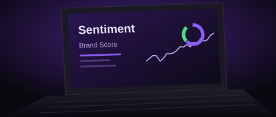
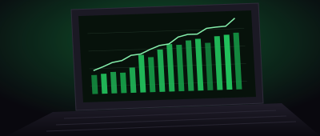
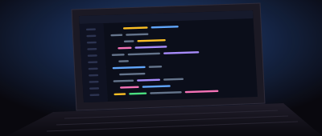
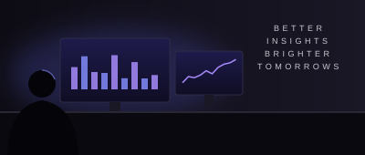
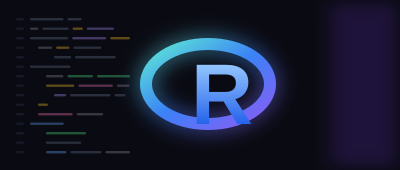

Sentiment Analizi Nedir? Markalar İçin Önemi
Sosyal medyada markalar hakkında konuşulanları anlamak, sadece negatif yorumları görmekten çok daha fazlasıdır.
- Sosyal Medya
- Veri Analizi
- Brandwatch
Veri analizi, sosyal medya, görselleştirme ve teknoloji üzerine yazdığım yazılarda, öğrendiklerimi ve deneyimlerimi paylaşıyorum.
Daha iyi sorular,
daha iyi analizler,
daha parlak yarınlar.

Sosyal medyada markalar hakkında konuşulanları anlamak, sadece negatif yorumları görmekten çok daha fazlasıdır.

Etkili bir dashboard, sadece veri göstermemeli aynı zamanda doğru karar almayı kolaylaştırmalıdır. Bu yazıda dikkat edilmesi gereken temel noktaları paylaşıyorum.

Gerçek hayattan örneklerle, dağınık verileri temizlemek için kullandığım pratik yöntemleri açıklıyorum.
Sosyal medya dinleme, markalar için neden kritik? Hangi araçlar kullanılır ve süreç nasıl yönetilir?
Tekrarlayan rapor süreçlerini otomatikleştirerek zaman kazanın. Bu yazıda adım adım bir örnek üzerinden gidiyorum.

Veri analistleri hangi araçları kullanır, gün içinde neler yapar? Kendi deneyimlerimden yola çıkarak bir günümü anlatıyorum.

R ile etkileyici görselleştirmeler oluşturmak için ggplot2 paketinin temel kullanımını ele alıyorum.
Yapay zeka, veri analistlerinin işini nasıl dönüştürüyor? Sektör için fırsatlar ve dikkat edilmesi gereken riskleri inceliyorum.
Seyahat planlamasında veri nasıl kullanılabilir? Rotalar, bütçe ve deneyimler için veri odaklı önerilerimi paylaşıyorum.
Aramanıza uygun yazı bulunamadı.